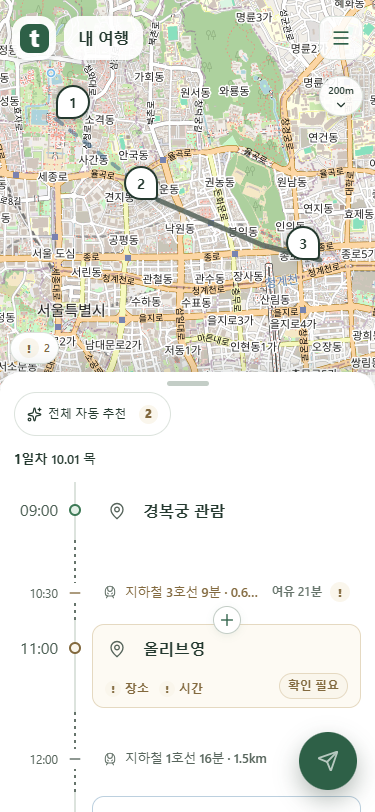
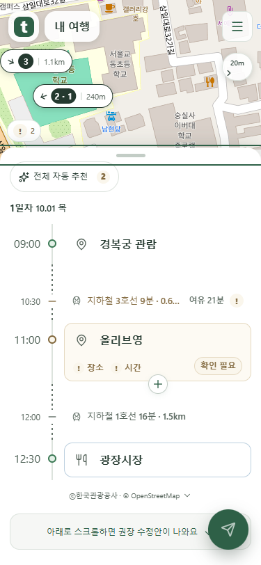
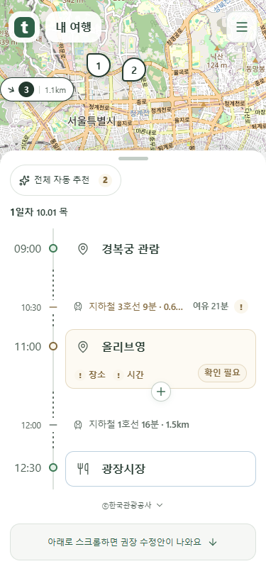
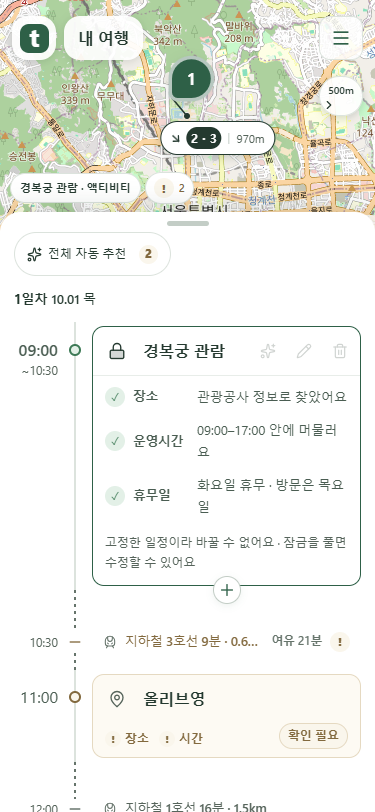
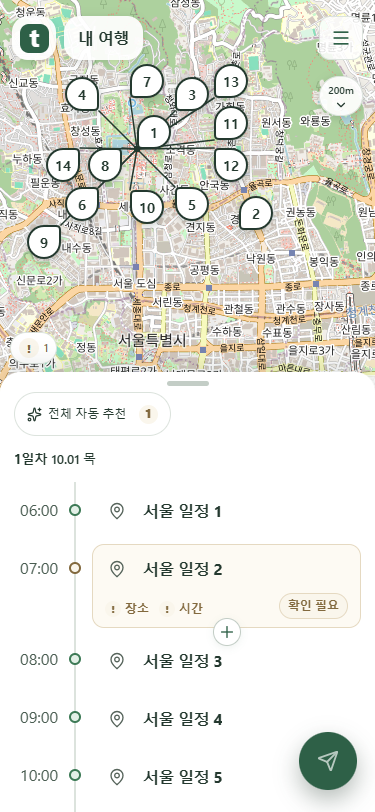

메뉴 정렬과 카드 표시 수정
2026-10-10 추가 요청을 적용한 새 화면입니다. 이전 미리보기는 보존했습니다.
메뉴 아래 같은 세로선
메뉴와 거리 버튼의 좌우 여백을 같은 값으로 맞췄습니다. 거리 글자는 같은 자리에 두고, 아래 여백에 화살표를 놓습니다.

글자는 고정하고 화살표만 이동
옆으로 펼칠 때도 거리 글자의 위치는 같습니다. 화살표만 아래 빈 공간 안에서 움직이며 방향을 부드럽게 바꿉니다.

필요한 일정만 테두리
일반 일정은 테두리를 숨깁니다. 선택·키보드 초점·확인 필요·수정된 일정에만 테두리를 표시합니다. 이동 줄의 표시는 가로 선으로 단순화했습니다.

잠금 버튼을 다시 누르면 해제
별도 설명 상자는 제거했습니다. 잠금 버튼을 다시 누르면 해제되며, 키보드 초점과 읽기용 버튼 이름은 유지합니다.

마커 모서리는 실제 좌표 쪽으로
겹침을 피하려고 옮긴 마커의 모서리와 연결선도 실제 좌표를 향하도록 맞췄습니다.

로컬 mock 서버 화면입니다. 이미지를 누르면 원본 크기로 볼 수 있습니다.